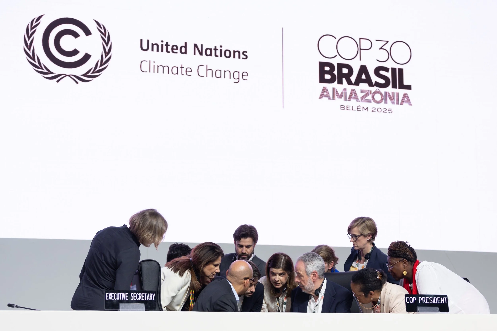
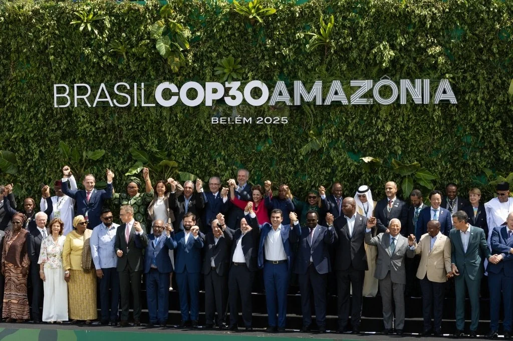
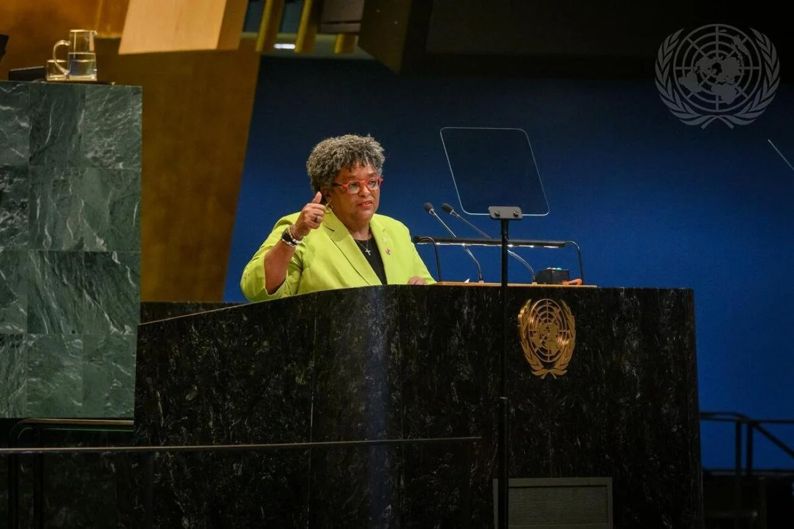
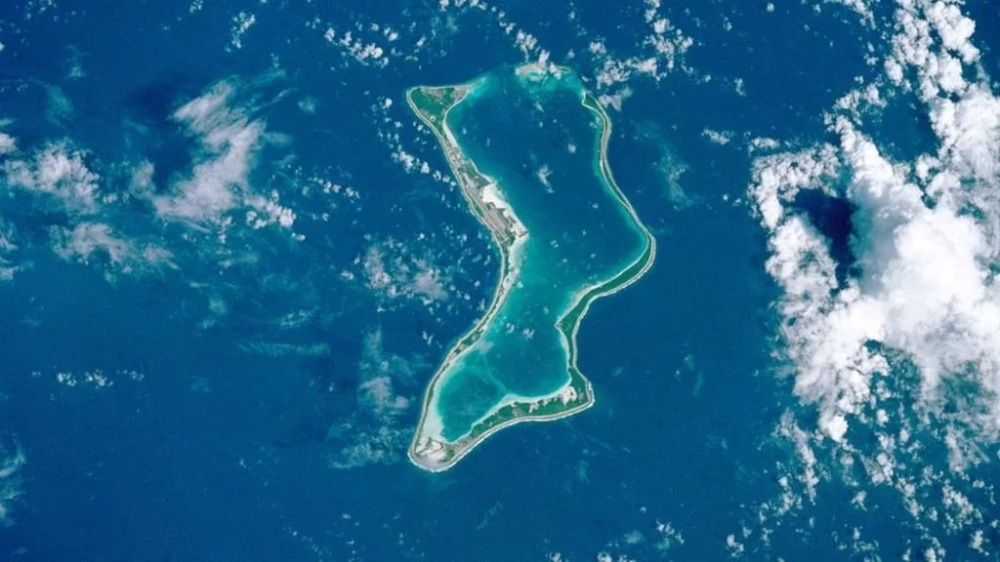
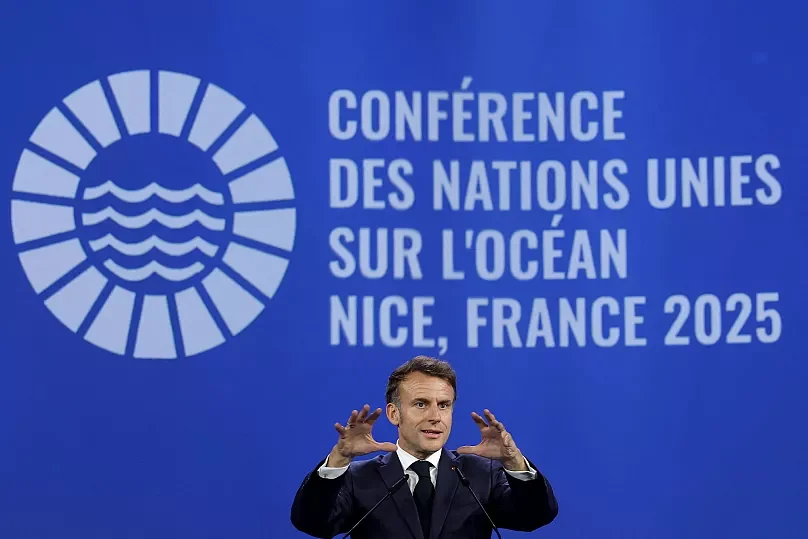
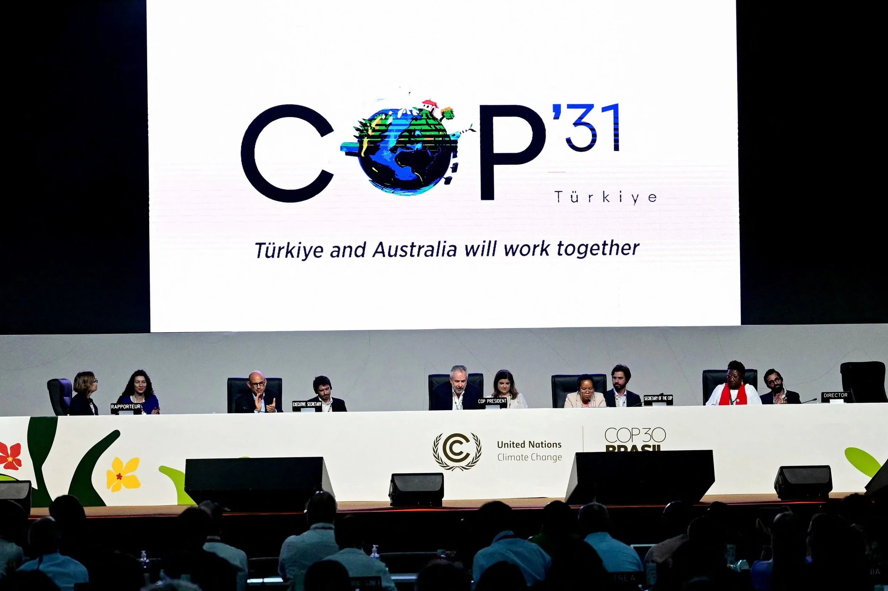

01Leadership & access
Island Leaders Programme
Training, networks and access for sub-national island leaders preparing to engage effectively in global climate and ocean negotiations.
Launching at COP31Climate · Ocean · Sustainable development
Oileán helps island leaders, communities and organisations navigate international policy spaces—and shape the outcomes that affect their futures.
About Oileán
Oileán—ill-awn, meaning “island” in Irish—supports island communities in accessing UN processes and contributing meaningfully to global decision-making.
We combine culturally grounded support with practical policy guidance, high-quality preparation and trusted networks. The result is stronger participation, visibility and influence for islands in climate, ocean and sustainable-development forums.
How we work →What we do
Designed around the realities island communities face: limited resources, long travel distances and complex global systems.

01Leadership & access
Training, networks and access for sub-national island leaders preparing to engage effectively in global climate and ocean negotiations.
Launching at COP31
02Youth & connection
A remote international programme connecting emerging island leaders, building skills and opening pathways into environmental decision-making.
Founding cohort · 2026
03Strategy & delivery
Executive training, policy briefings and delegation support for organisations engaging with regional and UN-level policy systems.
Tailored to your needs
Our approach
We do not speak for islands. We help island representatives enter international spaces prepared, connected and ready to speak with authority.
Support grounded in local priorities, identity and lived experience.
Complex systems translated into focused, usable guidance.
Preparation that turns participation into meaningful outcomes.
“Island communities should not only be present at global decision-making tables. Their priorities, knowledge and lived realities should shape the outcomes.”
Global engagement
Reviews, preparation and practical support around major global climate and ocean forums.

Ocean
Climate

Climate
Contact Oileán
We welcome enquiries from island representatives, funders, partners and organisations interested in strengthening island participation at UN events.
adam@oilean.ie ↗